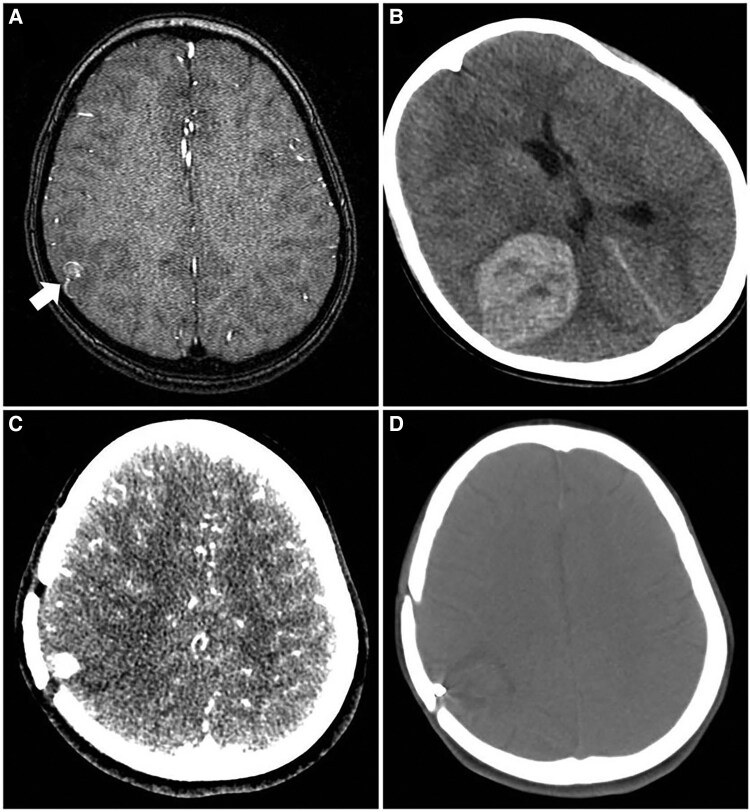
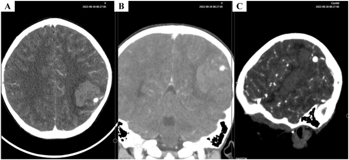
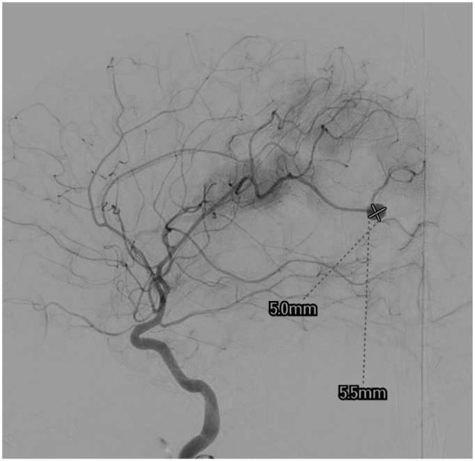
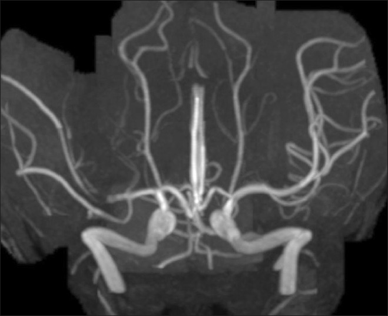

3139 — Túi phình nhiễm khuẩn nội sọ ở trẻ (infectious/mycotic intracranial aneurysm): "mọc trong vài ngày" ở nhánh xa — 2 mm vẫn vỡ
Tags: pattern:tui-phinh pattern:gia-phinh pattern:tui-phinh-nhanh-xa pattern:xuat-huyet-nao pattern:nhiem-trung vung:nao vung:dong-mach-nao protocol:CTA protocol:MRA protocol:DSA
Mức chắc chắn (certainty): tổng hợp y văn (literature synthesis) — ghép tổng quan hệ thống 40 nghiên cứu / 45 trẻ viêm mạch nhiễm khuẩn nội sọ (Surg Neurol Int 2026, PMC13157906), ca 14 tuổi dựng túi phình và vỡ trong 5 ngày sau thuyên tắc nhiễm khuẩn (Surg Neurol Int 2013, PMC3841922), ca 4 tuổi sốt 2 tháng rồi vỡ túi phình M4 được cuộn (Int J Surg Case Rep 2023, PMC10667870) và ca 9 tuổi viêm nội tâm mạc có túi phình nhỏ rồi xuất huyết, tái phát sau cuộn (Eur Heart J Case Rep 2025, PMC11879440). Không có ca do nhóm tự chụp.
Câu hỏi thực hành: bé trai 4 tuổi, sốt cao từng đợt 2 tháng, nhức đầu về đêm, rồi đột ngột li bì và thiếu máu. Cấp cứu chụp CT sọ không cản quang: khối máu tụ lớn bán cầu trái. Bác sĩ trực kết luận "xuất huyết não tự phát" và chuẩn bị chọc dò dịch não tủy. Câu hỏi: có bỏ sót gì trước khi chọc không, và nguyên nhân chảy máu ở một đứa trẻ sốt 2 tháng là gì? Bài chốt ba quyết định: (1) trẻ sốt + dấu thần kinh khu trú phải được chụp mạch máu não — không dừng ở CT không cản quang, vì 66,7% ca nhi được chẩn đoán bằng CT thường nhưng CT không trả lời được túi phình; (2) kích thước không trấn an được ai — trung bình túi phình nhiễm khuẩn chỉ 2,8 mm (0,2–11 mm), túi đã vỡ 3,3 mm vs chưa vỡ 2,1 mm, p = 0,324; (3) kháng sinh đơn thuần chỉ bít được 50% (6/12) và 33,3% vẫn tồn tại/lớn thêm → phải theo dõi mạch máu lặp lại và can thiệp khi vỡ, lớn hoặc có triệu chứng.
1. Tổng quan bệnh học – cơ chế hình ảnh: vì sao là "túi phình giả" và vì sao mọc nhanh
- Bản chất mô bệnh (pathology) — không phải túi phình thật: vi khuẩn từ mảng sùi (vegetation) của viêm nội tâm mạc (infective endocarditis, IE) hoặc từ nhiễm khuẩn huyết bám vào điểm phân nhánh của nhánh động mạch nhỏ ở vỏ não, gây viêm động mạch nhiễm khuẩn (infectious arteritis) phá hủy lớp áo giữa và áo ngoài. Kết quả là giả phình (pseudoaneurysm) — thành chỉ còn tổ chức viêm/hoại tử, không có lớp xơ chun, cổ không rõ, thường hình thoi (fusiform) hoặc bờ không đều.
- Vì sao ở nhánh XA (distal): tắc mạch nhiễm khuẩn dừng ở nơi lòng mạch nhỏ nhất. Trong 45 trẻ: động mạch não giữa (MCA) 49%, động mạch não trước (ACA) 15%, động mạch não sau (PCA) 11%; 64,2% xuất phát từ tuần hoàn trước xa, trong đó 76,5% là MCA (PMC13157906). Vì vậy túi phình nằm M2–M4, sát vỏ não — nơi đặt ống thông khó và can thiệp thường phải hy sinh động mạch mẹ.
- Vì sao mọc nhanh và vỡ sớm — mốc thời gian định lượng:
- Sau khi nhiễm khuẩn gieo vào thành mạch, thoái hóa thành mạch có thể xảy ra trong 24–48 giờ (PMC13157906).
- Ca kinh điển: nữ 14 tuổi viêm nội tâm mạc, MRA ngày 1 chỉ thấy "giả tắc" (pseudoocclusion) M1 phải (ảnh 4 dưới), 5 ngày sau vỡ túi phình thật với máu tụ — tức túi phình hình thành và vỡ trong vòng 1 tuần (PMC3841922).
- 68,9% trẻ trong tổng quan đến viện đã vỡ (xuất huyết dưới nhện và/hoặc trong nhu mô).
- Dịch tễ — bốn con số cần nhớ: túi phình nhiễm khuẩn chiếm 0,5–6,5% (một số nguồn 0,7–6,5%) tổng số túi phình nội sọ; 3–15% bệnh nhân IE có túi phình nhiễm khuẩn; tới 65% túi phình nhiễm khuẩn gắn với IE; ở trẻ, 48,9% (22/45) có IE kèm theo (PMC13157906, PMC11779502).
- Tuổi và giới trong loạt nhi: tuổi 5 tuần – 18 tuổi, trung bình 8,6 ± 5,5; 57,8% nam; 68,9% vào viện qua cấp cứu; sốt 68,9%, thiếu hụt thần kinh khu trú 77,8%, co giật 22,2%, rối loạn ý thức 20,0% (PMC13157906).
- TẠI SAO ảnh hưởng tới lựa chọn hình ảnh — vật lý từng phương thức:
- CT không cản quang: rất nhạy với máu cấp (đậm độ 50–90 HU, tăng theo hematocrit), thấy máu dưới nhện/khoang dưới nhện và máu trong nhu mô, nhưng không thấy túi phình — vì vậy đây chỉ là bước phân loại chảy máu, và chính là bước đầu ở 66,7% ca nhi.
- CTA: độ phân giải không gian cao (lát 0,6–1 mm, tái tạo MIP/3D), tương đương DSA với túi phình ≥ 3 mm, nhưng kém hơn ở túi < 3 mm, túi ở nhánh xa sát xương và túi thành mỏng không vôi. Vì thành giả phình không vôi hóa và đậm độ sau tiêm bằng lòng mạch, dấu hiệu chốt là "nốt tăng đậm dính vào nhánh mạch, bờ không đều, không cổ" — rất dễ bị đọc thành "mạch máu xoắn" nếu không xoay 3D.
- MRA TOF: không bức xạ (quan trọng ở trẻ), nhưng nhạy với chuyển động → thường cần an thần; dòng chảy chậm trong túi thành mỏng có thể mất tín hiệu (đọc âm giả). Ca PMC11879440 cho thấy MRA phát hiện túi phình trước khi vỡ, nên MRA vẫn có chỗ đứng khi trẻ hợp tác.
- DSA: chuẩn vàng cho túi nhỏ, xa, hình thái phức tạp; cho phép can thiệp ngay trong cùng buổi (coil/keo/hy sinh mạch mẹ). Giá phải trả: xâm lấn, nguy cơ co thắt, thủng, bóc tách, và bức xạ — trẻ chụp mạch não có tăng ~1% nguy cơ ung thư suốt đời (PMC13157906).
- Siêu âm qua thóp: chỉ dùng được ở sơ sinh/nhũ nhi còn thóp — trong loạt 45 trẻ chỉ 1 ca (2,2%) dùng siêu âm đầu tiên; không đủ để loại trừ.
2. Mẫu hình + chẩn đoán phân biệt theo vị trí, hình thái và căn nguyên (Gamut)
- Mẫu hình cốt lõi: trẻ sốt kéo dài ± bệnh tim bẩm sinh/van tim → đột ngột đau đầu, co giật, li bì, thiếu hụt khu trú → CT có máu dưới nhện ở rãnh vỏ não + máu tụ thùy ở vùng MCA xa → CTA/MRA/DSA: túi nhỏ 2–7 mm, hình thoi/bờ không đều, ở nhánh M3–M4.
- Theo vị trí (quyết định can thiệp):
- Nhánh xa vỏ não M2–M4 (49%): khó bảo tồn mạch mẹ → hy sinh mạch mẹ (parent artery occlusion) hoặc coil/keo; chấp nhận nhồi máu nhỏ ở vùng vỏ nếu tuần hoàn bàng hệ tốt.
- ACA/PCA xa (15%/11%): tương tự, nhưng vùng chức năng ưu thế (động mạch quanh thể chai, nhánh PCA cấp máu thị giác) → cân nhắc kỹ trước khi hy sinh mạch.
- Thân chính/đoạn gần ICA–M1: ít gặp ở trẻ; thường thấm thuốc thành mạch (blister) hoặc giả phình sau chấn thương, xử trí bằng stent chuyển dòng (flow diverter) hoặc mổ.
- Theo hình thái: hình thoi (fusiform) 15%, hình túi (saccular) 25%, còn lại không đều/blister/bóc tách; 49,1% ca trong loạt nhi không mô tả hình thái — đây chính là lý do phải mô tả có cấu trúc (kích thước 3 chiều, cổ, hình thoi, nhánh xuất phát).
- Theo căn nguyên (45 trẻ): vi khuẩn 68,9%; Streptococcus 33,3% (kể cả viridans, Abiotrophia, Granulicatella), Staphylococcus 17,8%, virus/HIV 13,3%, Gram âm 8,9%, ký sinh trùng 8,9%, lao 6,7%, nấm 6,7%, đa vi khuẩn 6,7% (PMC13157906). Ở nhũ nhi (8 ca): Staphylococcus và Streptococcus mỗi loại 25% — không được bỏ qua tụ cầu ở trẻ nhỏ.
- Gamut "trẻ sốt + đột quỵ/xuất huyết não": viêm mạch nhiễm khuẩn (mycotic), bóc tách động mạch (chấn thương cổ, FMD), túi phình thật/AVM (bài 3113), blister do viêm nội tâm mạc, huyết khối xoang tĩnh mạch não (bài 1948), PRES/RCVS (bài 653), thiếu máu hồng cầu hình liềm, u não chảy máu.
- Gợi nhớ SEPTIC: Septic emboli (mycotic), Endocarditis (luôn hỏi siêu âm tim), Pseudoaneurysm (giả phình, không cổ), Traumatic/dissecting (bóc tách), Immunosuppressed (nấm, lao, HIV), Congenital/AVM (túi phình thật, bài 3113).
3. Bảng so sánh phân biệt (ma trận đối chiếu)
| Thực thể (entity) | Hình ảnh điển hình (CT/CTA/MRA/DSA) | Chốt vào (rule-in) | Chốt loại (rule-out) | Gợi ý xác nhận |
|---|---|---|---|---|
| Túi phình nhiễm khuẩn (mycotic) | Túi nhỏ 2–7 mm ở nhánh xa M2–M4, hình thoi/bờ không đều, không cổ rõ, có thể thay đổi kích thước sau 1–2 tuần; máu dưới nhện ở rãnh vỏ + máu tụ thùy | Sốt/IE + túi mới xuất hiện ở nhánh xa + lớn nhanh khi chụp lại | Túi ở điểm phân nhánh thân chính, cổ rõ, thành đều, không sốt → nghĩ túi phình thật | DSA + 3D; chụp lại 1–2 tuần để chứng minh tiến triển; cấy máu + siêu âm tim |
| Túi phình thật (berry) | Cổ rõ, thường điểm phân nhánh đa giác Willis, thành đều, có thể vôi hóa ở người lớn | Cổ rõ + vị trí thân chính + không nhiễm khuẩn | Không cổ + nhánh xa + sốt → nghĩ nhiễm khuẩn | DSA; tiền sử gia đình, bệnh thận đa nang |
| Bóc tách động mạch nội sọ | Hẹp dài "string sign"/giả lòng, thường sau chấn thương cổ; T1 fat-sat có huyết khối trong thành | Hẹp dài + giả lòng + tiền sử chấn thương/đau cổ | Túi tròn, dính một nhánh xa, không hẹp dài → túi phình | CTA/MRA + T1 fat-sat; DSA |
| Giả phình sau chấn thương | Cổ hẹp nhưng thành mỏng, sát nơi va đập/xương; không sốt | Chấn thương + vị trí điển hình (đoạn gần, xoang hang) | Nhiễm khuẩn huyết + nhánh xa → mycotic | CTA; theo dõi 6–12 tuần |
| Túi phình dòng chảy trong AVM | Nidus AVM + động mạch nuôi giãn, túi ở động mạch nuôi hoặc trong nidus, thường 1–3 cm, trẻ có thể co giật/tím | Thấy nidus + mạch nuôi giãn | Không nidus, mạch xa bình thường → không phải flow-related | DSA (chuẩn); MRA |
| Huyết khối xoang tĩnh mạch não | Khuyết thuốc xoang + nhồi máu hai bên/không theo lãnh thổ, có thể chảy máu thùy | Khuyết thuốc xoang + tăng áp lực tĩnh mạch | Túi động mạch có cổ/thân → không phải CVST | MRV/CTV; DSA tĩnh mạch |
| Viêm mạch (PACNS, Kawasaki) | Hẹp–giãn xen kẽ nhiều ổ ở nhiều nhánh, không có túi đơn lẻ | Nhiều ổ hẹp/giãn + tổn thương da/thận | Một túi đơn độc rõ → nghiêng nhiễm khuẩn/thật | DSA; sinh thiết não–màng não khi cần |

*Bé gái 9 tuổi viêm nội tâm mạc (van động mạch chủ, sửa van + thắt ống động mạch trước đó): (A) MRA lúc nhập viện — túi phình nhiễm khuẩn nhỏ ở vỏ não phải (mũi tên trắng), chưa có triệu chứng tương xứng; (B) CTA lúc xảy ra xuất huyết não — máu tụ lớn bán cầu phải; (C) 1 tháng sau mở sọ; (D) trước khi ra viện. Nguồn: Eur Heart J Case Rep 2025 (PMC11879440), CC BY 4.0 — dùng nguyên bản, không crop.*Ba dấu hiệu "phải nhìn thấy" trên ảnh
- "Nốt" tăng đậm dính vào một nhánh xa: trên CTA lát mỏng, túi phình nhiễm khuẩn nhỏ hơn nhiều so với tưởng tượng — trong ca 4 tuổi, túi chỉ 7 × 6 mm trên CTA và 5 × 5,5 mm trên DSA (ảnh quiz ca 1–2), ở một nhánh M4 sát vỏ.
- "Giả tắc" (pseudoocclusion) trên MRA/CTA ở nhánh vừa bị thuyên tắc nhiễm khuẩn: mạch mất tín hiệu/không ngấm thuốc ở đoạn ngắn — đây không phải "mạch đã tắc an toàn" mà là dấu hiệu sớm của viêm thành mạch, có thể thành túi phình trong vài ngày (PMC3841922).
- Máu dưới nhện ở rãnh vỏ não một bên + máu tụ thùy nông: mẫu hình "chảy máu vỏ não" ở trẻ không do chấn thương phải đẩy chẩn đoán về mạch máu, không phải "xuất huyết tự phát".
4. Protocol chụp + ngưỡng và chiến lược xử trí
- Bước 1 — CT sọ không cản quang (mọi trẻ có dấu thần kinh cấp): trả lời 3 câu: có máu không, máu ở đâu (dưới nhện/khoang dưới nhện/nhu mô), có hiệu ứng khối/thoát vị không (quyết định không chọc dò). Ghi rõ vị trí máu tụ để CTA nhắm vùng.
- Bước 2 — CTA mạch máu não (lát 0,6–1 mm, tái tạo 3D): chỉ định khi có máu dưới nhện/nhu mô, hoặc trẻ IE có dấu thần kinh; đọc đa bình diện + MIP + 3D, so hai bên, nhìn nhánh xa (nơi hay bỏ sót). Nhớ: CTA tương đương DSA với túi ≥ 3 mm, kém hơn ở túi < 3 mm.
- Bước 3 — MRI/MRA (khi không có chảy máu cấp hoặc cần đánh giá nhu mô): DWI (nhồi máu do thuyên tắc), SWI (vi xuất huyết), MRA TOF, T1 sau tiêm; trẻ nhỏ cần an thần → cân nhắc lợi ích.
- Bước 4 — DSA (± chụp 3D xoay): chuẩn vàng cho túi < 3 mm, nhánh xa, hình thái không rõ; thực hiện cùng lúc với can thiệp nếu định cuộn/hy sinh mạch mẹ.
- Bước 5 — không quên ổ nhiễm nguyên phát: cấy máu 3 bộ trước kháng sinh, siêu âm tim (TTE, cân nhắc TEE), tìm ổ răng–xoang–tiết niệu–da, vì 48,9% ca nhi có IE và 90% ca IE có dấu thần kinh khu trú (PMC13157906).
- Ngưỡng và chỉ định điều trị:
- Vỡ / có máu tụ gây hiệu ứng khối: loại trừ túi ngay — nội mạch (coil, keo NBCA/Onyx, stent chuyển dòng) hoặc mổ (kẹp/trap + lấy máu tụ). Với nhánh xa, hy sinh mạch mẹ được chấp nhận khi có tuần hoàn bàng hệ.
- Chưa vỡ, nhỏ, ổn định: kháng sinh IV 4–6 tuần + theo dõi mạch máu lặp lại; không dùng kháng sinh đơn thuần như "điều trị triệt để".
- Lớn lên khi chụp lại, túi mới xuất hiện, hoặc xuất hiện triệu chứng: can thiệp — đây là ngưỡng thực dụng, vì kích thước tuyệt đối không dự báo vỡ.
- Viêm nội tâm mạc cần mổ van: nếu chưa loại trừ được túi phình, mổ tim có heparin hóa làm tăng nguy cơ chảy máu nội sọ → ưu tiên loại trừ túi trước (nội mạch giúp rút ngắn thời gian chờ; trung vị 18 ngày từ can thiệp đến mổ van trong một loạt người lớn).
- Hiệu quả từng chiến lược (45 trẻ, PMC13157906):
| Chiến lược | Bít hoàn toàn trên hình ảnh | Kết cục thần kinh tốt | Tử vong |
|---|---|---|---|
| Kháng sinh đơn thuần (n = 18) | 6/12 = 50,0% (2 bán phần, 4 tồn tại/lớn) | 11/18 = 61,1% | 2/18 = 11,1% |
| Nội mạch (n = 12) | 11/11 = 100% | 8/12 = 66,7% | 1/12 = 8,3% |
| Mổ (n = 14) | 9/11 = 81,8% | 10/14 = 71,4% | 2/14 = 14,3% |
- Tử vong theo tuổi: nhũ nhi 25,0% (2/8) > 1–5 tuổi 16,7% (1/6) > > 5 tuổi 6,5% (2/31) — trẻ càng nhỏ, dấu hiệu càng mơ hồ và tử vong càng cao.
- So sánh người lớn (loạt 24 túi phình nhiễm khuẩn): trung bình 2,8 mm (0,2–11); tử vong trong viện 29,1% nếu vỡ vs 11,7% nếu chưa vỡ; 58,3% túi đã vỡ được can thiệp (PMC11984814) — cùng một bệnh, tiên lượng phụ thuộc vào việc phát hiện trước khi vỡ.
flowchart TD
A[Tre sot keo dai + dau dau/co giat/li bi] --> B[CT so khong can quang]
B --> C{Co mau duoi nhen hoac mau tu?}
C -->|Co| D[CTA lat mong 0,6-1 mm + 3D]
C -->|Khong nhung nghi IE| E[MRA TOF hoac CTA]
D --> F{Thay tui phinh nhanh xa?}
E --> F
F -->|Khong ro| G[DSA - chuan vang]
F -->|Co| H{Da vo, lon dan hoac co trieu chung?}
G --> H
H -->|Co| I[Loai tru tui: noi mach coil/keo/hy sinh mach me hoac mo]
H -->|Khong| J[Khang sinh IV 4-6 tuan + chup lai mach 1-2 tuan]
J --> K{Tui lon len hoac tui moi?}
K -->|Co| I
K -->|Khong| L[Tiep tuc khang sinh + theo doi]
- Bức xạ (ALARA): ưu tiên MRI/MRA khi trẻ hợp tác; CTA một thì, giới hạn trường chiếu; DSA giảm frame rate, giảm fluoroscopy time — vì mỗi lần chụp mạch não ở trẻ tăng ~1% nguy cơ ung thư suốt đời.
5. Biến thể bình thường và cạm bẫy
- "Túi nhỏ thì an toàn" — sai hoàn toàn: túi vỡ trung bình 3,3 mm, chưa vỡ 2,1 mm, p = 0,324; đã có túi 0,2 mm trong loạt. Không dùng ngưỡng 5 mm của túi phình thật cho bệnh này.
- CT không cản quang bình thường: không loại trừ — 66,7% ca nhi khởi đầu bằng CT thường, nhưng chẩn đoán túi phình chỉ có được nhờ chụp mạch. Trẻ IE có dấu thần kinh phải chụp mạch, kể cả khi CT sạch.
- "Giả tắc" trên MRA đọc thành "mạch đã tắc": ca PMC3841922 — MRA ngày 1 chỉ là giả tắc M1, 5 ngày sau vỡ. Gặp hình ảnh này phải chụp lại mạch trong 24–72 giờ.
- Bỏ sót túi ở nhánh xa vì khung hình quá nhỏ: luôn MIP toàn bộ đa giác Willis + nhánh M3–M4, xoay 3D; nếu CTA âm mà nghi ngờ cao → DSA.
- Nhầm máu tụ do túi phình với "xuất huyết não tự phát": ở trẻ, máu tụ thùy nông + sốt phải nghĩ mạch máu nhiễm khuẩn; chọc dò dịch não tủy trước khi loại trừ túi phình là nguy hiểm (nguy cơ tụt áp, chảy máu lại).
- Kháng sinh "chữa khỏi" trên một lần chụp: 50% bít hoàn toàn, nhưng 33,3% tồn tại/lớn → một lần chụp sạch không kết thúc theo dõi; phải chụp lại trong đợt điều trị.
- Tái phát sau can thiệp ở trẻ: ca 9 tuổi (PMC11879440) tái phát sau cuộn, phải can thiệp lần hai — trẻ có mạch nhỏ, thành viêm, dễ tái thông → theo dõi DSA sau can thiệp (thường 3–6 tháng và khi có triệu chứng).
- Sót ổ nhiễm nguyên phát: điều trị túi mà không cấy máu/không siêu âm tim → bỏ sót IE, tái phát thuyên tắc. Và ngược lại, viêm nội tâm mạc ở trẻ có thể biểu hiện đầu tiên bằng thần kinh (tới 30% ca) — "không có tiếng thổi" không loại trừ.
- Bẫy "thỏa mãn tìm kiếm": đã thấy một túi phình vẫn phải đọc toàn bộ mạch não — nhiều túi đã được báo cáo; và đọc cả nhu mô (nhồi máu do thuyên tắc, áp-xe) vì cùng một nguồn sùi.
6. Tự lượng giá — Blind Quiz
Ca 1 — Bé trai 4 tuổi, sốt cao từng đợt 2 tháng, nhức đầu về đêm; nay li bì, hemoglobin tụt, CT có máu tụ lớn bán cầu trái. Nhìn ảnh, mô tả trước.

- Gợi ý lâm sàng: tiền sử van động mạch chủ hai lá; sốt 2 tháng, nhức đầu, nôn; không chấn thương.
- Câu hỏi: (1) Dấu hiệu chính nằm ở đâu? (2) Ba chẩn đoán phân biệt? (3) Bước tiếp theo trước khi can thiệp?
Bấm để hiện đáp án (findings + chẩn đoán)
- Dấu hiệu: nốt tăng đậm ~7 × 6 mm ở nhánh xa động mạch não giữa trái (vùng đỉnh–chẩm), sát khối máu tụ; không thấy cổ rõ, bờ không đều.
- Chẩn đoán: túi phình nhiễm khuẩn đã vỡ trên nền viêm nội tâm mạc (van hai lá bẩm sinh) — sốt 2 tháng chính là ổ nhiễm.
- Phân biệt: túi phình thật/AVM (không sốt, cổ rõ), giả phình do chấn thương (không có tiền sử), bóc tách (hẹp dài, giả lòng).
- Bước tiếp: DSA (xác nhận + can thiệp cùng buổi), cấy máu, siêu âm tim, kháng sinh IV 6 tuần.
- Nguồn ảnh: Int J Surg Case Rep 2023 (PMC10667870), CC BY-NC-ND 4.0 — nguyên bản, không crop/ghép.
Ca 2 — Cùng bệnh nhi, DSA trước can thiệp. Đo túi và chọn cách xử trí.

- Câu hỏi: Túi nằm ở đoạn nào, kích thước bao nhiêu, và vì sao hy sinh mạch mẹ lại hợp lý ở đây?
Bấm để hiện đáp án
- Dấu hiệu: túi 5,0 × 5,5 mm ở đoạn M4 của MCA trái, rất xa, nhánh nhỏ, không có cổ để kẹp/coil đơn thuần.
- Xử trí: cuộn (coil) kèm bít cả động mạch nuôi — chấp nhận nhồi máu vỏ não nhỏ vì vùng này ít chức năng và túi đã vỡ.
- Nguyên lý: giả phình thành viêm, không cổ → "loại trừ" quan trọng hơn "bảo tồn"; với nhánh xa, hy sinh mạch mẹ là lựa chọn chuẩn.
- Nguồn ảnh: Int J Surg Case Rep 2023 (PMC10667870), CC BY-NC-ND 4.0.
Ca 3 — Bé gái 14 tuổi viêm nội tâm mạc; MRA ngày đầu chỉ thấy "mất tín hiệu" một đoạn M1 phải. Bạn làm gì tiếp?

- Câu hỏi: Hình ảnh này có phải "mạch đã tắc"? Nguy cơ trong 5 ngày tới là gì?
Bấm để hiện đáp án
- Dấu hiệu: M1 phải mất tín hiệu đoạn ngắn — "giả tắc" do thuyên tắc nhiễm khuẩn + viêm thành mạch, không phải tắc mạn.
- Diễn tiến thật của ca: 5 ngày sau, túi phình nhiễm khuẩn hình thành và vỡ (máu tụ + chuyển dạng chảy máu của ổ nhồi máu), phải mở sọ giảm áp.
- Việc cần làm: chụp lại mạch máu trong 24–72 giờ (CTA/MRA, DSA nếu nghi), không coi là "đã tắc an toàn"; theo dõi sát thần kinh.
- Nguồn ảnh: Surg Neurol Int 2013 (PMC3841922), CC BY-NC-SA 3.0 — nguyên bản, không crop.
Bài liên quan chéo
- 3113 – AVM não ở trẻ & túi phình liên quan dòng chảy
- 212 – Xuất huyết dưới nhện
- 227 – Đau đầu sét đánh (thunderclap)
- 653 – PRES & RCVS ở trẻ
- 6163 – Viêm đĩa đệm–thân sống & phình ĐMC nhiễm khuẩn
- 249 – Rò động mạch cảnh–xoang hang chấn thương
Ảnh
images/3139_tui-phinh-nhiem-khuan_CTA-IJSCR2023-PMC10667870.jpg— Int J Surg Case Rep 2023 (PMC10667870), CC BY-NC-ND 4.0 (nguyên bản).images/3139_tui-phinh-nhiem-khuan_DSA-IJSCR2023-PMC10667870.jpg— Int J Surg Case Rep 2023 (PMC10667870), CC BY-NC-ND 4.0 (nguyên bản).images/3139_tui-phinh-nhiem-khuan_MRA-CTA_EHJCR2025-PMC11879440.jpg— Eur Heart J Case Rep 2025 (PMC11879440), CC BY 4.0.images/3139_tui-phinh-nhiem-khuan_MRA_SNI2013-PMC3841922.jpg— Surg Neurol Int 2013 (PMC3841922), CC BY-NC-SA 3.0.- Nguồn, giấy phép và ghi chú từng ảnh:
images/CREDITS.md.
Không dùng để chẩn đoán độc lập khi chưa có người hướng dẫn.